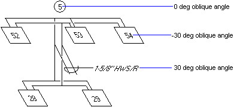

|
ObliqueAngle Property |
Specifies the oblique angle of the object.
Signature
object.ObliqueAngle
object
Attribute, AttributeReference, Shape, Text, TextStyle
The objects this property applies to.
ObliqueAngle
Double; read-write
The angle in radians within the range of -85 to +85 degrees. A positive angle denotes a lean to the right; a negative value will have 2*PI added to it to convert it to its positive equivalent.
Remarks
The oblique angle is the object's "angle of slant" away from its vertical axis.
 |
| Comments? |